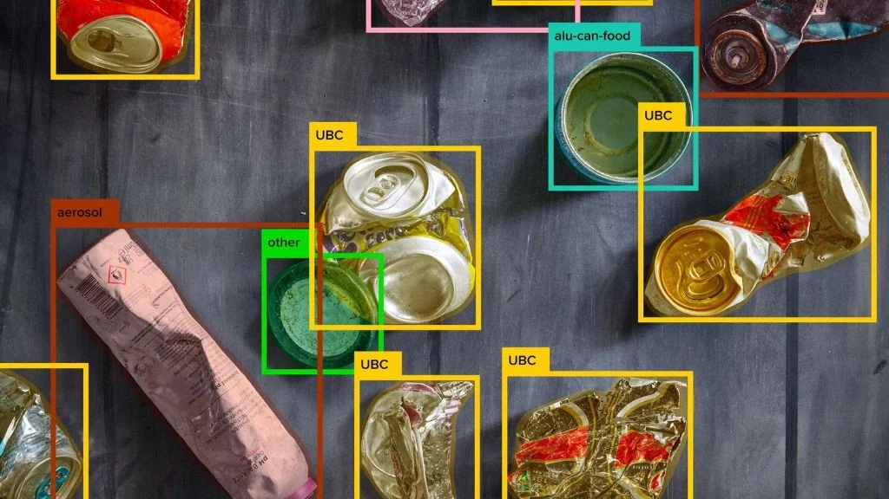

The 5 biggest recycling trends to look out for in 2025
The recycling industry is rapidly evolving, with 2025 poised to be a pivotal year. Key advancements are expected in AI-powered sorting, aluminum decarbonization, and packaging sustainability. Dr. Volker Rehrmann, head of TOMRA Recycling, a leader in sensor-based sorting, highlights five key trends shaping the future of recycling.
1. AI-driven sorting gets smarter
Deep learning, a branch of AI, will continue to revolutionize sorting practices. Building on last year's successes in accurately sorting challenging materials like opaque packaging, textiles, and multi-layer materials, deep learning will tackle even more complex tasks, potentially expanding into areas like metal sorting. While traditional sorting methods using sensors remain important, AI's ability to recognize objects based on visual characteristics opens new possibilities, automating tasks previously done manually, similar to how TOMRA's GAINnext system mimics human vision.
2. Real-time insights for better sorting
AI and cloud technology will enhance transparency and analysis in sorting facilities. Platforms like TOMRA Insight and tools like PolyPerception's waste analyzer will provide real-time data on waste composition. Digital twins of sorting lines will enable detailed tracking and analysis, empowering operators to make data-driven decisions for optimized efficiency, reduced material loss, and improved regulatory compliance.
3. PPWR sets the pace for packaging
The European Packaging and Packaging Waste Regulation (PPWR) will significantly impact the industry in 2025. Ambitious recyclability targets for 2030 and mandatory recycled content requirements for plastic packaging will drive innovation in eco-design and recycling technologies, including advanced mechanical and chemical recycling. The PPWR provides much-needed certainty, encouraging investment and potentially stabilizing recycled material prices.
4. Aluminum recycling goes green
Decarbonization remains crucial, especially for aluminum. Driven by corporate net-zero commitments, demand for recycled aluminum and high-quality feedstock will continue to grow. Recycled aluminum offers significant CO2 savings, and achieving a circular aluminum economy requires improved sorting and material separation. Technologies like Laser-Induced Breakdown Spectroscopy (LIBS), with TOMRA planning further AUTOSORT PULSE system deployments, will play a key role.
5. Expanding the scope of recycling
Beyond common recyclables like plastics and aluminum, other material streams will gain traction. For example, advanced wood sorting technologies are enabling the production of recycled wood products with quality comparable to virgin materials. Similarly, advancements in textile recycling are demonstrating the technological feasibility of large-scale textile recovery and reuse.